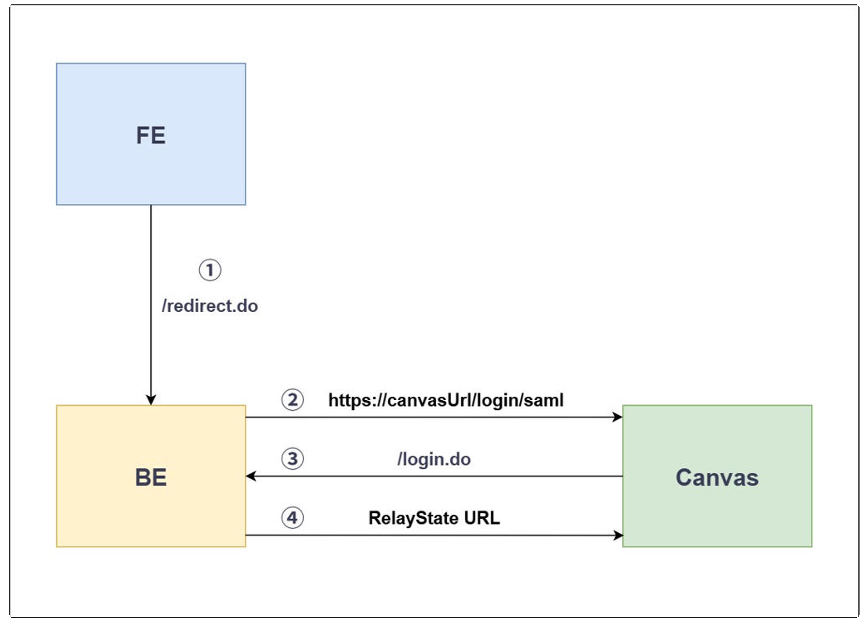
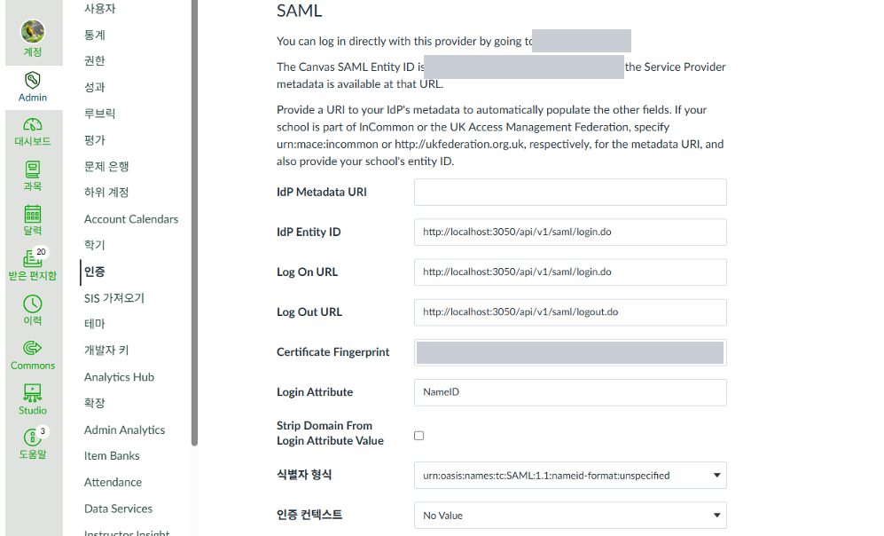

인증하는 척만 하던 Canvas 연동을 실제 SAML SSO로 완성
회사가 새 LMS 포털을 만들면서 Canvas와 로그인을 연동해야 했습니다. 기존 코드는 Canvas 쪽 인증 부분을 주석 처리해 두고, 실제 인증 없이 로그인된 것처럼 동작하고 있었습니다. 다른 개발자가 만들던 SSO 연동 모듈을 이어받아 실제로 인증이 되도록 완성했습니다.
- 정리
- 먼저 인증 흐름을 정리했습니다. 포털은 사용자를 인증하는 쪽(IdP), Canvas는 그 결과를 믿고 로그인시키는 쪽(SP)으로 역할을 정했습니다. SAML 표준과 Canvas 설정을 GPT와 함께 하나씩 대조하며 요청부터 로그인까지 순서를 확인했습니다.
- 구현
- Canvas가 받아들이는 인증 응답 XML 양식을 확정해 템플릿으로 만들었습니다.
- OpenSSL로 인증서와 개인키를 발급하고, 응답 XML에 전자서명을 넣었습니다.
- Canvas에 인증서를 등록해, 서명이 검증된 응답만 로그인되도록 했습니다.
- 결과
- 인증 없이 통과하던 연동이 서명 검증을 거치는 실제 SSO가 되었습니다. 같은 방식을 영상 플랫폼 Panopto에도 적용했고, 설정 방법과 인증 흐름을 Confluence 문서로 남겨 개발자들과 리뷰했습니다.


<!-- ③ Canvas → 포털 서버: 인증 요청 (SAML Request) -->
<samlp:AuthnRequest xmlns:samlp="urn:oasis:names:tc:SAML:2.0:protocol"
xmlns:saml="urn:oasis:names:tc:SAML:2.0:assertion"
AssertionConsumerServiceURL="https://회사 Canvas 주소/login/saml"
Destination="http://localhost:3050/api/v1/saml/login.do"
ID="_17fd58ae-2812-47cd-968d-4674dbded9be"
IssueInstant="2025-08-12T04:09:46Z"
ProtocolBinding="urn:oasis:names:tc:SAML:2.0:bindings:HTTP-POST"
Version="2.0">
<saml:Issuer>http://회사 Canvas 주소/saml2</saml:Issuer>
<samlp:NameIDPolicy AllowCreate="true"
Format="urn:oasis:names:tc:SAML:1.1:nameid-format:unspecified"/>
</samlp:AuthnRequest><!-- ④ 포털 서버 → Canvas: 서명한 인증 응답 (SAML Response, 주요 부분) -->
<samlp:Response xmlns:samlp="urn:oasis:names:tc:SAML:2.0:protocol"
Destination="https://회사 Canvas 주소/courses/과제 경로"
InResponseTo="_0e56494a-883d-4092-82ba-d746ace011b3" Version="2.0">
<saml:Issuer>http://localhost:3050/api/v1/saml/login.do</saml:Issuer>
<samlp:Status>
<samlp:StatusCode Value="urn:oasis:names:tc:SAML:2.0:status:Success"/>
</samlp:Status>
<saml:Assertion ID="_95c9c466-3204-44a0-9254-1e893bb6edc4" Version="2.0">
<saml:Issuer>http://localhost:3050/api/v1/saml/login.do</saml:Issuer>
<!-- Issuer 바로 다음에 전자서명이 들어가야 Canvas가 검증한다 -->
<ds:Signature xmlns:ds="http://www.w3.org/2000/09/xmldsig#">
<ds:SignedInfo> … </ds:SignedInfo>
<ds:SignatureValue> … </ds:SignatureValue>
<ds:KeyInfo><ds:X509Data><ds:X509Certificate> … </ds:X509Certificate></ds:X509Data></ds:KeyInfo>
</ds:Signature>
<saml:Subject>
<saml:NameID>사용자 ID</saml:NameID>
<saml:SubjectConfirmation Method="urn:oasis:names:tc:SAML:1.0:cm:bearer">
<saml:SubjectConfirmationData NotOnOrAfter="2025-08-12T04:25:24Z"
Recipient="https://회사 Canvas 주소/login/saml"/>
</saml:SubjectConfirmation>
</saml:Subject>
<saml:Conditions NotBefore="2025-08-12T04:10:24Z" NotOnOrAfter="2025-08-12T04:25:24Z">
<saml:AudienceRestriction>
<saml:Audience>http://회사 Canvas 주소/saml2</saml:Audience>
</saml:AudienceRestriction>
</saml:Conditions>
</saml:Assertion>
</samlp:Response>